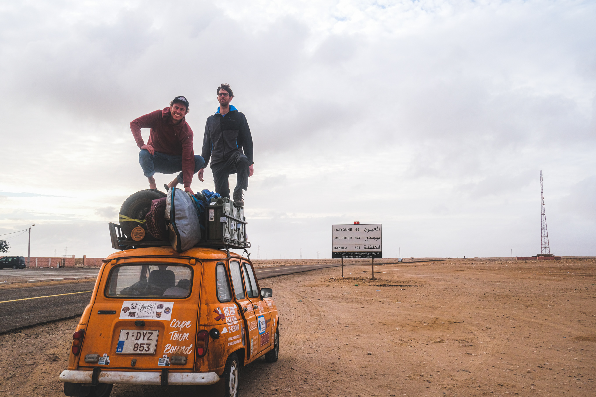
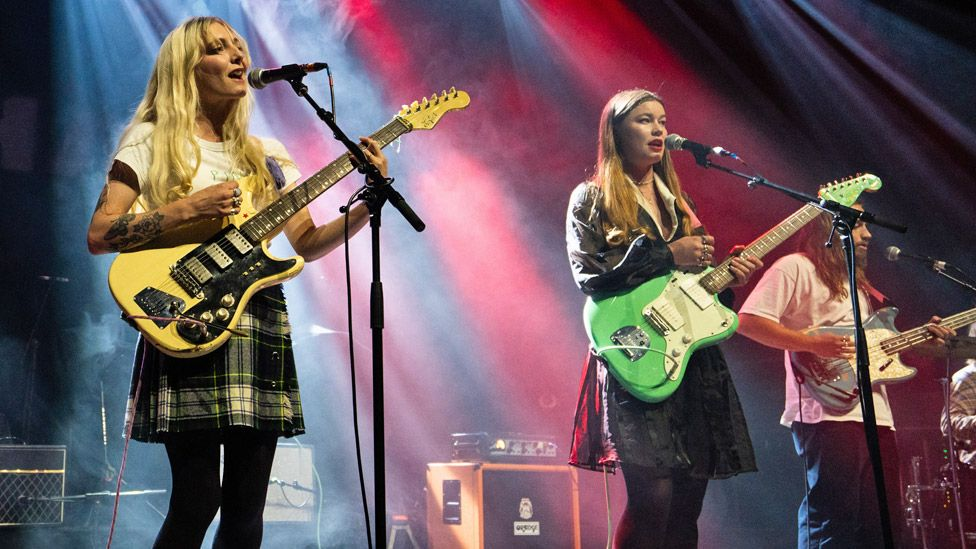
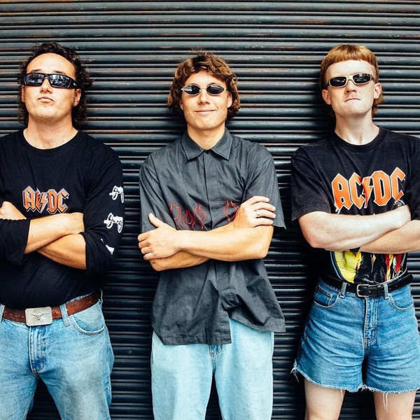

Bram Laperre
Fun personal info
- Name: Bram Laperre
- Address: Käl 105, Docksta, Sverige
- Phone: +32496.39.48.59
- E-mail: bramlaperre@gmail.com

Hobbies
-
- Adventuring
- The art of living life in a fun, rather than easy way.
Hier vind je al wat info over gelijkgezinden.
- Splitboarden
- De sport waarbij je al skiënd/langlaufend de berg op wandelt om al snowboardend naar beneden te komen.
Deze Youtubevideo toont waar het allemaal om draait.
- DIY'en
- De hobby waarbij je veel geld uitgeeft om iets te herstellen of op te knappen en daar ongeveer 8 keer zo lang over te doen als een vakman.
Deze Youtubevideo toont hoe pittoresk DIY'en in stijl kan zijn.
My choice of best young bands
- Wet Leg - The two (wo)man band madness

Official band website
- The Chats - Aussie punk straight to the soul

Official band website
- Big Thief - slow cowboy stuff your mind will never forget

Official band website